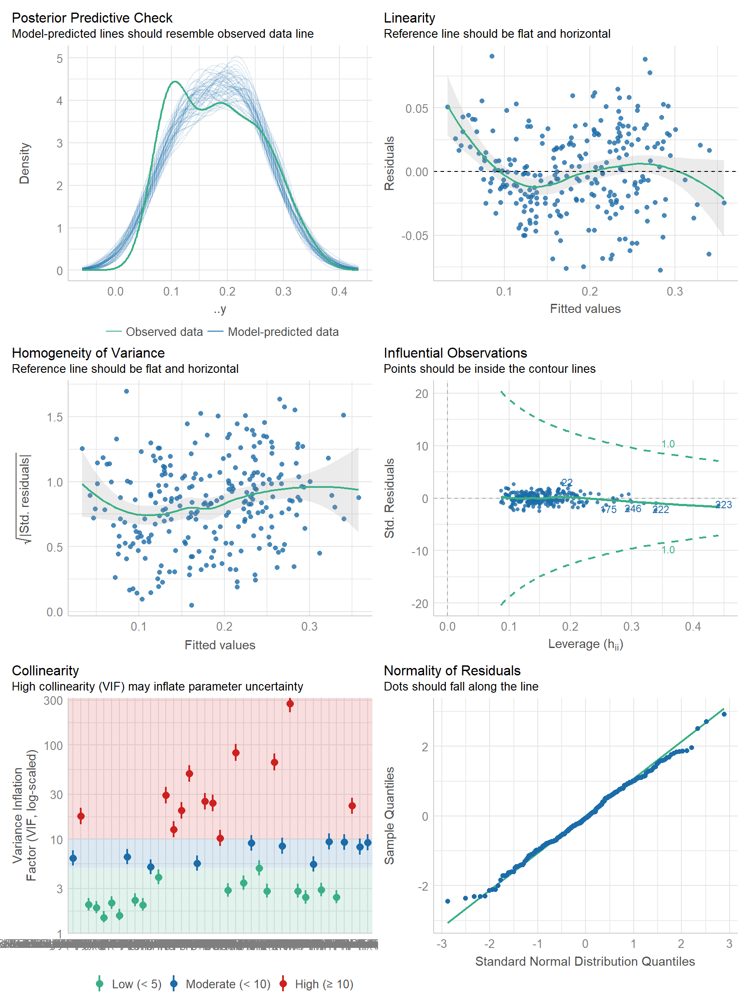
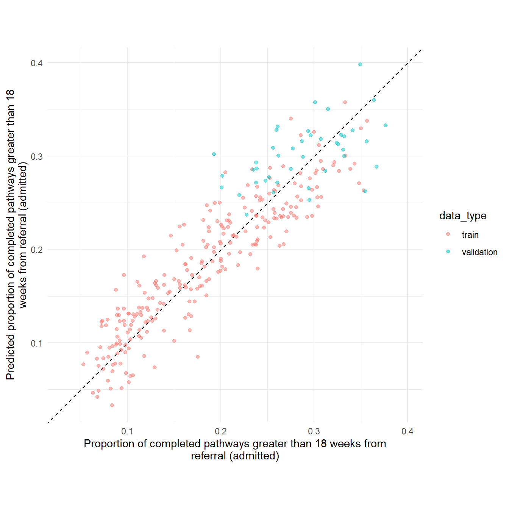
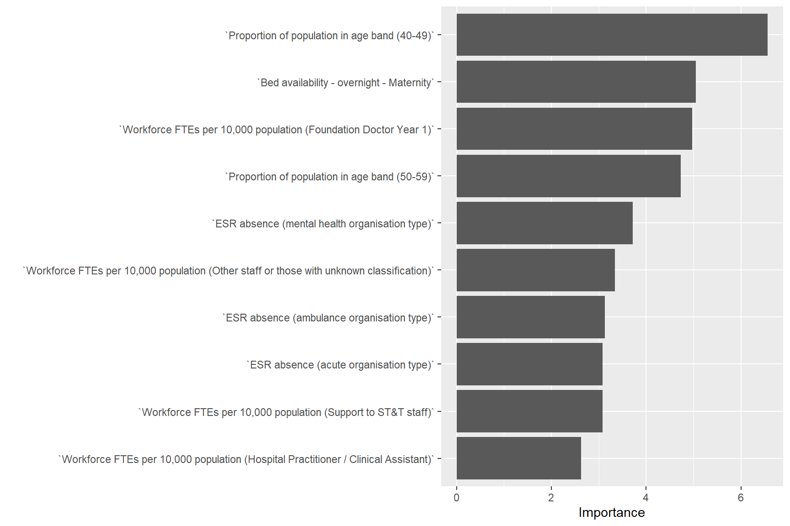

source(here::here("R/00_libraries.R"))
source(here::here("R/01_utils.R"))
source(here::here("R/03_collating_data.R"))
source(here::here("R/04_modelling_utils.R"))Linear regression
Select fields
target_variable <- "Proportion of completed pathways greater than 18 weeks from referral (admitted)"
dc_data <- dc_data |>
select(
all_of(c("org", "year", target_variable)),
matches("^ESR|^Workforce|^Bed|age band|Year 6|GPPS")
) |>
dplyr::filter(
# retain all rows where target variable is not na
# retain all rows where we have population age group information
if_all(
all_of(
c(target_variable, "Proportion of population in age band (80-89)")), ~ !is.na(.))
) |>
arrange(
year, org
)Splitting data
set.seed(321)
proportions <- train_validation_proportions(dc_data)
# split dataset into train, validation and test
splits <- rsample::initial_validation_time_split(
data = dc_data,
prop = proportions
)
data_train <- rsample::training(splits)
data_validation <- rsample::validation(splits)
data_test <- rsample::testing(splits)
# check when train, validation and test data start and finish
lapply(
list(data_train, data_validation, data_test),
function(x) range(x$year)
)[[1]]
[1] 2013 2018
[[2]]
[1] 2019 2019
[[3]]
[1] 2020 2020# create train and validation set for tuning hyperparameters
data_validation_set <- validation_set(splits)Create workflow
# set model ---------------------------------------------------------------
linear_model <- parsnip::linear_reg(
mode = "regression",
engine = "lm"
)
# set recipe --------------------------------------------------------------
missing_data <- names(dc_data)[colSums(is.na(dc_data)) > 0]
linear_recipe <- recipe(data_train) |>
update_role(
all_of(target_variable),
new_role = "outcome"
) |>
update_role(
org, year,
new_role = "id variable"
) |>
update_role(
matches("^ESR|^Workforce|^Bed|age band|Year 6|GPPS"),
new_role = "predictor"
) |>
step_center(all_predictors()) |>
step_scale(all_predictors()) |>
step_impute_knn(all_of(missing_data)) |>
step_corr(all_predictors(),
threshold = 0.9) |>
# estimate the means and standard deviations
prep(training = data_train, retain = TRUE)
# create workflow ---------------------------------------------------------
linear_workflow <- workflow() |>
add_model(linear_model) |>
add_recipe(linear_recipe)
# fit model ---------------------------------------------------------------
linear_fit <- linear_workflow |>
fit(data = data_train)Model checks
# check linear assumptions ------------------------------------------------
linear_fit$fit$fit |>
performance::check_model()Model matrix is rank deficient. VIFs may not be sensible.
# plot predictions vs observed --------------------------------------------
list(
train = data_train,
validation = data_validation
) |>
bind_rows(
.id = "data_type"
) |>
add_prediction_to_data(
linear_fit
) |>
ggplot(
aes(x = .data[[target_variable]],
y = .pred)) +
# Create a diagonal line:
geom_abline(lty = 2) +
geom_point(
alpha = 0.5,
aes(
colour = data_type
)
) +
labs(
y = stringr::str_wrap(
paste("Predicted", tolower(target_variable)),
60),
x = stringr::str_wrap(target_variable, 60)
) +
# Scale and size the x- and y-axis uniformly:
coord_obs_pred() +
theme_minimal()Warning in predict.lm(object = object$fit, newdata = new_data, type =
"response", : prediction from rank-deficient fit; consider predict(.,
rankdeficient="NA")
Evaluation metrics on validation data
list(
train = data_train,
validation = data_validation
) |>
purrr::map_dfr(
~ linear_model_metrics(
data = .x,
model_fit = linear_fit
),
.id = "data"
) |>
tidyr::pivot_wider(
names_from = data,
values_from = .estimate
)Warning in predict.lm(object = object$fit, newdata = new_data, type =
"response", : prediction from rank-deficient fit; consider predict(.,
rankdeficient="NA")
Warning in predict.lm(object = object$fit, newdata = new_data, type =
"response", : prediction from rank-deficient fit; consider predict(.,
rankdeficient="NA")# A tibble: 3 × 4
.metric .estimator train validation
<chr> <chr> <dbl> <dbl>
1 rmse standard 0.0320 0.0446
2 rsq standard 0.827 0.262
3 mae standard 0.0260 0.0371Variable importance
linear_fit|>
extract_fit_parsnip() |>
vip::vip(num_features = 10)